第十章 智能体通信协议¶
在前面的章节中，我们构建了功能完备的单体智能体，它们具备推理、工具调用和记忆能力。然而，当我们尝试构建更复杂的 AI 系统时，自然会有疑问：如何让智能体与外部世界高效交互？如何让多个智能体相互协作？
这正是智能体通信协议要解决的核心问题。本章将为 HelloAgents 框架引入三种通信协议：MCP（Model Context Protocol）用于智能体与工具的标准化通信，A2A（Agent-to-Agent Protocol）用于智能体间的点对点协作，ANP（Agent Network Protocol）用于构建大规模智能体网络。这三种协议共同构成了智能体通信的基础设施层。
通过本章的学习，您将掌握智能体通信协议的设计理念和实践技能，理解三种主流协议的设计差异，学会如何选择合适的协议来解决实际问题。
10.1 智能体通信协议基础¶
10.1.1 为何需要通信协议¶
回顾我们在第七章构建的 ReAct 智能体，它已经具备了强大的推理和工具调用能力。让我们看一个典型的使用场景：
from hello_agents import ReActAgent, HelloAgentsLLM
from hello_agents.tools import CalculatorTool, SearchTool
llm = HelloAgentsLLM()
agent = ReActAgent(name="AI助手", llm=llm)
agent.add_tool(CalculatorTool())
agent.add_tool(SearchTool())
# 智能体可以独立完成任务
response = agent.run("搜索最新的AI新闻，并计算相关公司的市值总和")
这个智能体工作得很好，但它面临着三个根本性的限制。首先是工具集成的困境：每当需要访问新的外部服务（如 GitHub API、数据库、文件系统），我们都必须编写专门的 Tool 类。这不仅工作量大，而且不同开发者编写的工具无法互相兼容。其次是能力扩展的瓶颈：智能体的能力被限制在预先定义的工具集内，无法动态发现和使用新的服务。最后是协作的缺失：当任务复杂到需要多个专业智能体协作时（如研究员+撰写员+编辑），我们只能通过手动编排来协调它们的工作。
让我们通过一个更具体的例子来理解这些限制。假设你要构建一个智能研究助手，它需要：
# 传统方式：手动集成每个服务
class GitHubTool(BaseTool):
"""需要手写GitHub API适配器"""
def run(self, repo_url):
# 大量的API调用代码...
pass
class DatabaseTool(BaseTool):
"""需要手写数据库适配器"""
def run(self, query):
# 数据库连接和查询代码...
pass
class WeatherTool(BaseTool):
"""需要手写天气API适配器"""
def run(self, location):
# 天气API调用代码...
pass
# 每个新服务都需要重复这个过程
agent.add_tool(GitHubTool())
agent.add_tool(DatabaseTool())
agent.add_tool(WeatherTool())
这种方式存在明显的问题：代码重复（每个工具都要处理 HTTP 请求、错误处理、认证等），难以维护（API 变更需要修改所有相关工具），无法复用（其他开发者的工具无法直接使用），扩展性差（添加新服务需要大量编码工作）。
通信协议的核心价值正是解决这些问题。它提供了一套标准化的接口规范，让智能体能够以统一的方式访问各种外部服务，而无需为每个服务编写专门的适配器。这就像互联网的 TCP/IP 协议，它让不同的设备能够相互通信，而不需要为每种设备编写专门的通信代码。
有了通信协议，上面的代码可以简化为：
from hello_agents.tools import MCPTool
# 连接到MCP服务器，自动获得所有工具
mcp_tool = MCPTool() # 内置服务器提供基础工具
# 或者连接到专业的MCP服务器
github_mcp = MCPTool(server_command=["npx", "-y", "@modelcontextprotocol/server-github"])
database_mcp = MCPTool(server_command=["python", "database_mcp_server.py"])
# 智能体自动获得所有能力，无需手写适配器
agent.add_tool(mcp_tool)
agent.add_tool(github_mcp)
agent.add_tool(database_mcp)
通信协议带来的改变是根本性的：标准化接口让不同服务提供统一的访问方式，互操作性使得不同开发者的工具可以无缝集成，动态发现允许智能体在运行时发现新的服务和能力，可扩展性让系统能够轻松添加新的功能模块。
10.1.2 三种协议设计理念比较¶
智能体通信协议并非单一的解决方案，而是针对不同通信场景设计的一系列标准。在本章以目前业界主流的三种协议 MCP、A2A 和 ANP 为例进行实践，下面是一个总览的比较。
（1）MCP：智能体与工具的桥梁
MCP（Model Context Protocol）由 Anthropic 团队提出[1]，其核心设计理念是标准化智能体与外部工具/资源的通信方式。想象一下，你的智能体需要访问文件系统、数据库、GitHub、Slack 等各种服务。传统做法是为每个服务编写专门的适配器，这不仅工作量大，而且难以维护。MCP 通过定义统一的协议规范，让所有服务都能以相同的方式被访问。
MCP 的设计哲学是"上下文共享"。它不仅仅是一个 RPC（远程过程调用）协议，更重要的是它允许智能体和工具之间共享丰富的上下文信息。如图 10.1 所示，当智能体访问一个代码仓库时，MCP 服务器不仅能提供文件内容，还能提供代码结构、依赖关系、提交历史等上下文信息，让智能体能够做出更智能的决策。
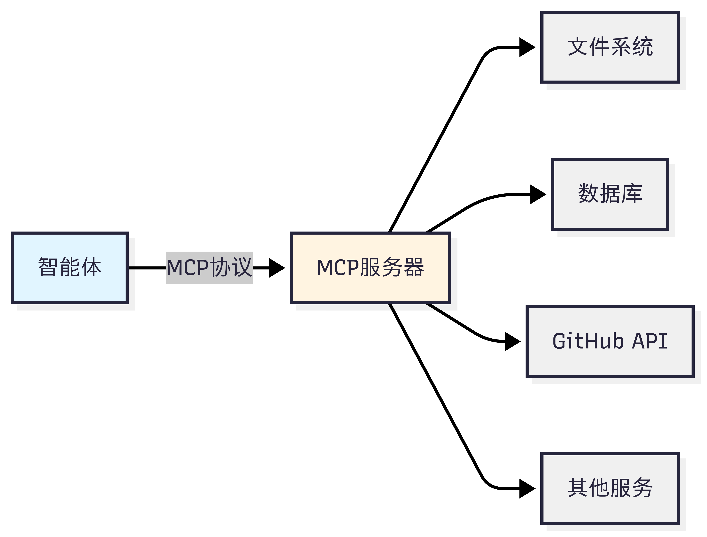
图 10.1 MCP 设计思想
（2）A2A：智能体间的对话
A2A（Agent-to-Agent Protocol）协议由 Google 团队提出2，其核心设计理念是实现智能体之间的点对点通信。与 MCP 关注智能体与工具的通信不同，A2A 关注的是智能体之间如何相互协作。这种设计让智能体能够像人类团队一样进行对话、协商和协作。
A2A 的设计哲学是"对等通信"。如图 10.2 所示，在 A2A 网络中，每个智能体既是服务提供者，也是服务消费者。智能体可以主动发起请求，也可以响应其他智能体的请求。这种对等的设计避免了中心化协调器的瓶颈，让智能体网络更加灵活和可扩展。
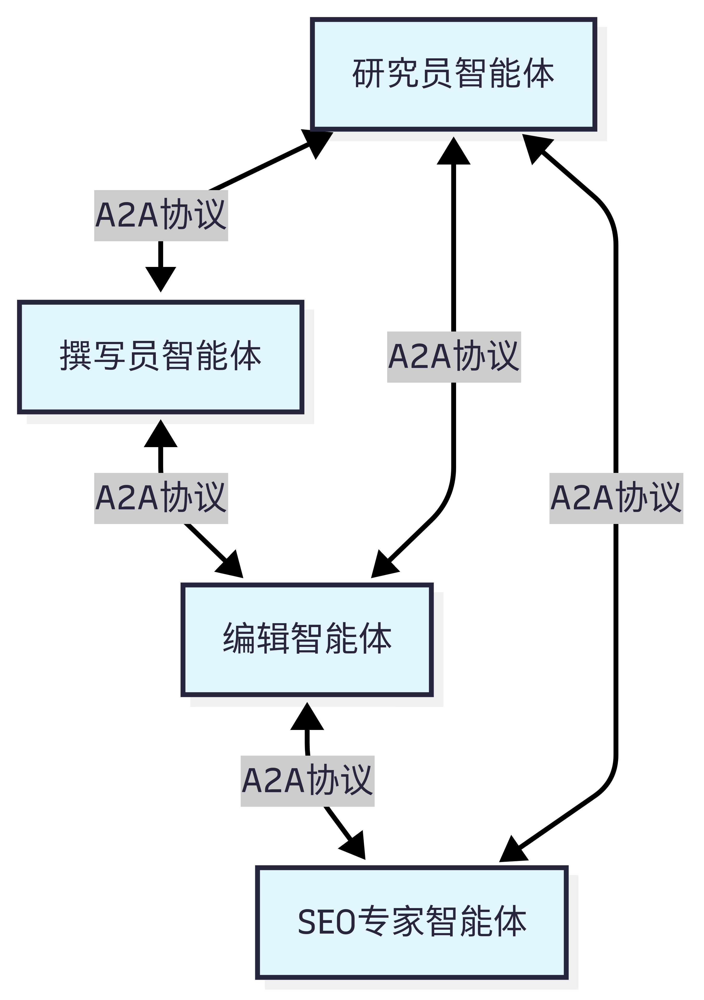
图 10.2 A2A 设计思想
（3）ANP：智能体网络的基础设施
ANP（Agent Network Protocol）是一个概念性的协议框架3，目前由开源社区维护，还没有成熟的生态，其核心设计理念是构建大规模智能体网络的基础设施。如果说 MCP 解决的是"如何访问工具"，A2A 解决的是"如何与其他智能体对话"，那么 ANP 解决的是"如何在大规模网络中发现和连接智能体"。
ANP 的设计哲学是"去中心化服务发现"。在一个包含成百上千个智能体的网络中，如何让智能体能够找到它需要的服务？如图 10.3 所示，ANP 提供了服务注册、发现和路由机制，让智能体能够动态地发现网络中的其他服务，而不需要预先配置所有的连接关系。
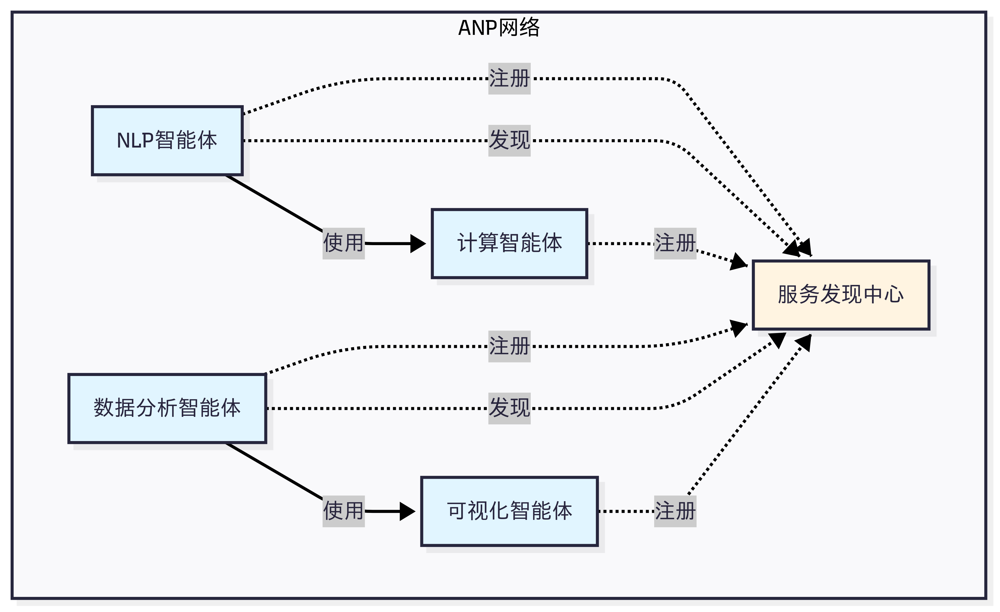
图 10.3 ANP 设计思想
最后在表 10.1 中，让我们通过一个对比表格来更清晰地理解这三种协议的差异：
表 10.1 三种协议对比
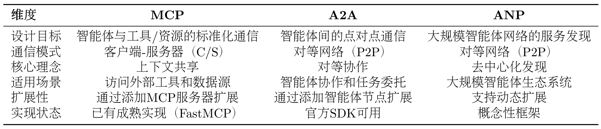
（4）如何选择合适的协议？
目前的协议还处于发展早期，MCP 的生态相对成熟，不过各种工具的时效性取决于维护者，更推荐选择大公司背书的 MCP 工具。
选择协议的关键在于理解你的需求：
- 如果你的智能体需要访问外部服务（文件、数据库、API），选择MCP
- 如果你需要多个智能体相互协作完成任务，选择A2A
- 如果你要构建大规模的智能体生态系统，考虑ANP
10.1.3 HelloAgents 通信协议架构设计¶
在理解了三种协议的设计理念后，让我们看看如何在 HelloAgents 框架中实现和使用它们。我们的设计目标是：让学习者能够以最简单的方式使用这些协议，同时保持足够的灵活性以应对复杂场景。
如图 10.4 所示，HelloAgents 的通信协议架构采用三层设计，从底层到上层分别是：协议实现层、工具封装层和智能体集成层。
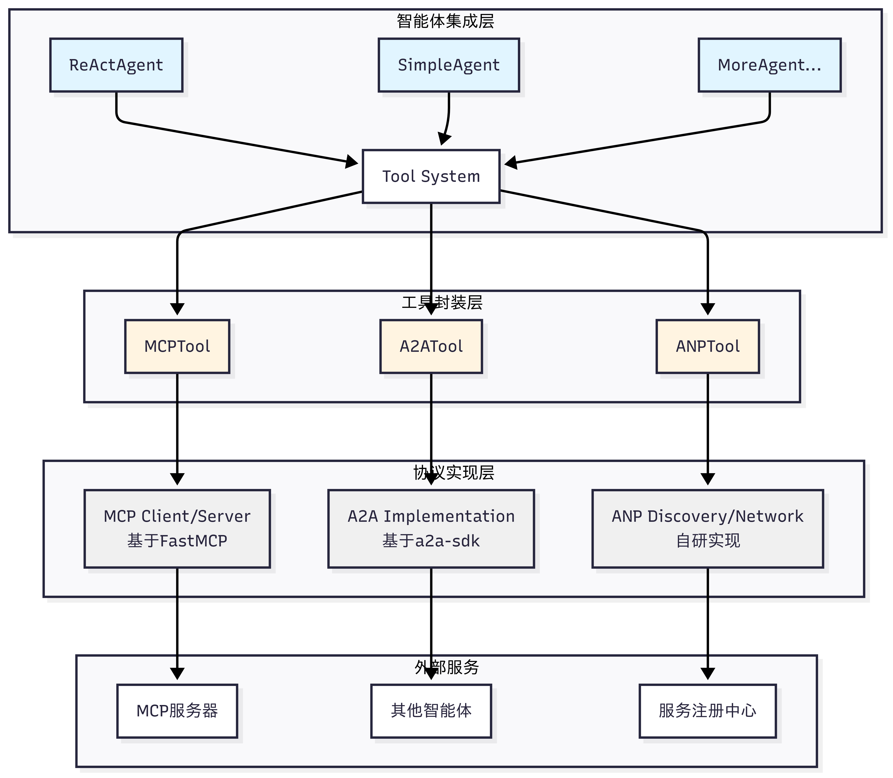
图 10.4 HelloAgents 通信协议设计
（1）协议实现层：这一层包含了三种协议的具体实现。MCP 基于 FastMCP 库实现，提供客户端和服务器功能；A2A 基于 Google 官方的 a2a-sdk 实现；ANP 是我们自研的轻量级实现，提供服务发现和网络管理功能，当然目前也有官方的实现，考虑到后期的迭代，因此这里只做概念的模拟。
（2）工具封装层：这一层将协议实现封装成统一的 Tool 接口。MCPTool、A2ATool 和 ANPTool 都继承自 BaseTool，提供一致的run()方法。这种设计让智能体能够以相同的方式使用不同的协议。
（3）智能体集成层：这一层是智能体与协议的集成点。所有的智能体（ReActAgent、SimpleAgent 等）都通过 Tool System 来使用协议工具，无需关心底层的协议细节。
10.1.4 本章学习目标与快速体验¶
让我们先看看第十章的学习内容：
hello_agents/
├── protocols/ # 通信协议模块
│ ├── mcp/ # MCP协议实现（Model Context Protocol）
│ │ ├── client.py # MCP客户端（支持5种传输方式）
│ │ ├── server.py # MCP服务器（FastMCP封装）
│ │ └── utils.py # 工具函数（create_context/parse_context）
│ ├── a2a/ # A2A协议实现（Agent-to-Agent Protocol）
│ │ └── implementation.py # A2A服务器/客户端（基于a2a-sdk，可选依赖）
│ └── anp/ # ANP协议实现（Agent Network Protocol）
│ └── implementation.py # ANP服务发现/注册（概念性实现）
└── tools/builtin/ # 内置工具模块
└── protocol_tools.py # 协议工具包装器（MCPTool/A2ATool/ANPTool）
对于这一章的内容，主要是应用为主，学习目标是能拥有在自己项目中应用协议的能力。并且协议目前发展处于早期，所以无需花费太多精力去造轮子。在开始实战之前，让我们先准备好开发环境：
# 安装HelloAgents框架（第10章版本）
pip install "hello-agents[protocol]==0.2.2"
# 安装NodeJS, 可以参考Additional-Chapter中的文档
让我们用最简单的代码体验一下三种协议的基本功能：
from hello_agents.tools import MCPTool, A2ATool, ANPTool
# 1. MCP：访问工具
mcp_tool = MCPTool()
result = mcp_tool.run({
"action": "call_tool",
"tool_name": "add",
"arguments": {"a": 10, "b": 20}
})
print(f"MCP计算结果: {result}") # 输出: 30.0
# 2. ANP：服务发现
anp_tool = ANPTool()
anp_tool.run({
"action": "register_service",
"service_id": "calculator",
"service_type": "math",
"endpoint": "http://localhost:8080"
})
services = anp_tool.run({"action": "discover_services"})
print(f"发现的服务: {services}")
# 3. A2A：智能体通信
a2a_tool = A2ATool("http://localhost:5000")
print("A2A工具创建成功")
这个简单的示例展示了三种协议的核心功能。在接下来的章节中，我们将深入学习每种协议的详细用法和最佳实践。
10.2 MCP 协议实战¶
现在，让我们深入学习 MCP，掌握如何让智能体访问外部工具和资源。
10.2.1 MCP 协议概念介绍¶
（1）MCP：智能体的"USB-C"
想象一下，你的智能体可能需要同时做很多事情，例如： - 读取本地文件系统的文档 - 查询 PostgreSQL 数据库 - 搜索 GitHub 上的代码 - 发送 Slack 消息 - 访问 Google Drive
传统方式下，你需要为每个服务编写适配器代码，处理不同的 API、认证方式、错误处理等。这不仅工作量大，而且难以维护。更重要的是，不同 LLM 平台的 function call 实现差异巨大，切换模型时需要重写大量代码。
MCP 的出现改变了这一切。它就像 USB-C 统一了各种设备的连接方式一样，MCP 统一了智能体与外部工具的交互方式。无论你使用 Claude、GPT 还是其他模型，只要它们支持 MCP 协议，就能无缝访问相同的工具和资源。
（2）MCP 架构
MCP 协议采用 Host、Client、Servers 三层架构设计，让我们通过图 10.5 的场景来理解这些组件如何协同工作。
假设你正在使用 Claude Desktop 询问："我桌面上有哪些文档？"
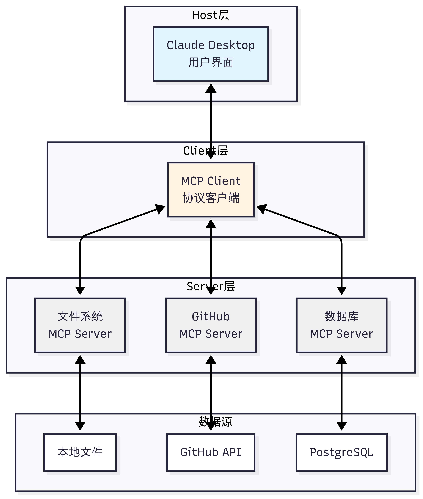
图 10.5 MCP 案例演示
三层架构的职责：
-
Host（宿主层）：Claude Desktop 作为 Host，负责接收用户提问并与 Claude 模型交互。Host 是用户直接交互的界面，它管理整个对话流程。
-
Client（客户端层）：当 Claude 模型决定需要访问文件系统时，Host 中内置的 MCP Client 被激活。Client 负责与适当的 MCP Server 建立连接，发送请求并接收响应。
-
Server（服务器层）：文件系统 MCP Server 被调用，执行实际的文件扫描操作，访问桌面目录，并返回找到的文档列表。
完整的交互流程：用户问题 → Claude Desktop(Host) → Claude 模型分析 → 需要文件信息 → MCP Client 连接 → 文件系统 MCP Server → 执行操作 → 返回结果 → Claude 生成回答 → 显示在 Claude Desktop 上
这种架构设计的优势在于关注点分离：Host 专注于用户体验，Client 专注于协议通信，Server 专注于具体功能实现。开发者只需专注于开发对应的 MCP Server，无需关心 Host 和 Client 的实现细节。
（3）MCP 的核心能力
如表 10.2 所示，MCP 协议提供了三大核心能力，构成完整的工具访问框架：
表 10.2 MCP 核心能力
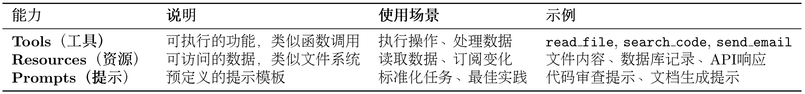
这三种能力的区别在于：Tools 是主动的（执行操作），Resources 是被动的（提供数据），Prompts 是指导性的（提供模板）。
（4）MCP 的工作流程
让我们通过一个具体例子来理解 MCP 的完整工作流程，如图 10.6 所示：
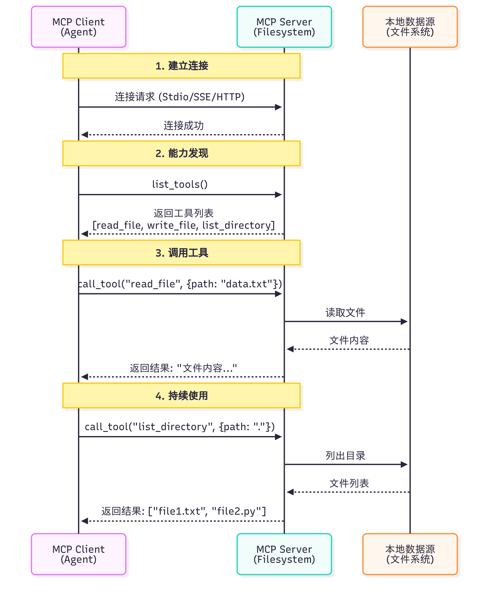
图 10.6 MCP 案例演示
一个关键问题是：Claude（或其他 LLM）是如何决定使用哪些工具的？
当用户提出问题时，完整的工具选择流程如下：
-
工具发现阶段：MCP Client 连接到 Server 后，首先调用
list_tools()获取所有可用工具的描述信息（包括工具名称、功能说明、参数定义） -
上下文构建：Client 将工具列表转换为 LLM 能理解的格式，添加到系统提示词中。例如：
-
模型推理：LLM 分析用户问题和可用工具，决定是否需要调用工具以及调用哪个工具。这个决策基于工具的描述和当前对话上下文
-
工具执行：如果 LLM 决定使用工具，Client 通过 MCP Server 执行所选工具，获取结果
-
结果整合：工具执行结果被送回给 LLM，LLM 结合结果生成最终回答
这个过程是完全自动化的，LLM 会根据工具描述的质量来决定是否使用以及如何使用工具。因此，编写清晰、准确的工具描述至关重要。
（5）MCP 与 Function Calling 的差异
很多开发者会问：我已经在用 Function Calling 了，为什么还需要 MCP？ 让我们通过表 10.3 来理解它们的区别。
表 10.3 Function Calling 与 MCP 对比
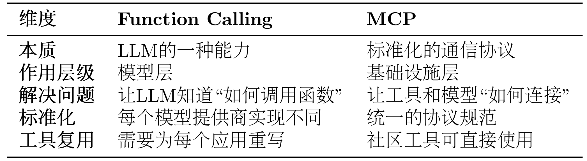
这里我们以智能体需要访问 GitHub 仓库和本地文件系统为例子来详细对比同一个任务的两种实现
方式 1：使用 Function Calling
# 步骤1：为每个LLM提供商定义函数
# OpenAI格式
openai_tools = [
{
"type": "function",
"function": {
"name": "search_github",
"description": "搜索GitHub仓库",
"parameters": {
"type": "object",
"properties": {
"query": {"type": "string", "description": "搜索关键词"}
},
"required": ["query"]
}
}
}
]
# Claude格式
claude_tools = [
{
"name": "search_github",
"description": "搜索GitHub仓库",
"input_schema": { # 注意：不是parameters
"type": "object",
"properties": {
"query": {"type": "string", "description": "搜索关键词"}
},
"required": ["query"]
}
}
]
# 步骤2：自己实现工具函数
def search_github(query):
import requests
response = requests.get(
"https://api.github.com/search/repositories",
params={"q": query}
)
return response.json()
# 步骤3：处理不同模型的响应格式
# OpenAI的响应
if response.choices[0].message.tool_calls:
tool_call = response.choices[0].message.tool_calls[0]
result = search_github(**json.loads(tool_call.function.arguments))
# Claude的响应
if response.content[0].type == "tool_use":
tool_use = response.content[0]
result = search_github(**tool_use.input)
方式 2：使用 MCP
from hello_agents.protocols import MCPClient
# 步骤1：连接到社区提供的MCP服务器（无需自己实现）
github_client = MCPClient([
"npx", "-y", "@modelcontextprotocol/server-github"
])
fs_client = MCPClient([
"npx", "-y", "@modelcontextprotocol/server-filesystem", "."
])
# 步骤2：统一的调用方式（与模型无关）
async with github_client:
# 自动发现工具
tools = await github_client.list_tools()
# 调用工具（标准化接口）
result = await github_client.call_tool(
"search_repositories",
{"query": "AI agents"}
)
# 步骤3：任何支持MCP的模型都能使用
# OpenAI、Claude、Llama等都使用相同的MCP客户端
首先需要明确的是，Function Calling 与 MCP 并非竞争关系，而是相辅相成的。Function Calling 是大语言模型的一项核心能力，它体现了模型内在的智能，使模型能够理解何时需要调用函数，并精准生成相应的调用参数。相对地，MCP 则扮演着基础设施协议的角色，它在工程层面解决了工具与模型如何连接的问题，通过标准化的方式来描述和调用工具。
我们可以用一个简单的类比来理解：Function Calling 相当于你学会了“如何打电话”这项技能，包括何时拨号、如何与对方沟通、何时挂断。而 MCP 则是那个全球统一的“电话通信标准”，确保了任何一部电话都能顺利地拨通另一部。
了解了它们之间的互补关系后，我们接下来看看如何在 HelloAgents 中使用 MCP 协议。
10.2.2 使用 MCP 客户端¶
HelloAgents 基于 FastMCP 2.0 实现了完整的 MCP 客户端功能。我们提供了异步和同步两种 API，以适应不同的使用场景。对于大多数应用，推荐使用异步 API，它能更好地处理并发请求和长时间运行的操作。下面我们将提供一个拆解的操作演示。
（1）连接到 MCP 服务器
MCP 客户端支持多种连接方式，最常用的是 Stdio 模式（通过标准输入输出与本地进程通信）：
import asyncio
from hello_agents.protocols import MCPClient
async def connect_to_server():
# 方式1：连接到社区提供的文件系统服务器
# npx会自动下载并运行@modelcontextprotocol/server-filesystem包
client = MCPClient([
"npx", "-y",
"@modelcontextprotocol/server-filesystem",
"." # 指定根目录
])
# 使用async with确保连接正确关闭
async with client:
# 在这里使用client
tools = await client.list_tools()
print(f"可用工具: {[t['name'] for t in tools]}")
# 方式2：连接到自定义的Python MCP服务器
client = MCPClient(["python", "my_mcp_server.py"])
async with client:
# 使用client...
pass
# 运行异步函数
asyncio.run(connect_to_server())
（2）发现可用工具
连接成功后，第一步通常是查询服务器提供了哪些工具：
async def discover_tools():
client = MCPClient(["npx", "-y", "@modelcontextprotocol/server-filesystem", "."])
async with client:
# 获取所有可用工具
tools = await client.list_tools()
print(f"服务器提供了 {len(tools)} 个工具：")
for tool in tools:
print(f"\n工具名称: {tool['name']}")
print(f"描述: {tool.get('description', '无描述')}")
# 打印参数信息
if 'inputSchema' in tool:
schema = tool['inputSchema']
if 'properties' in schema:
print("参数:")
for param_name, param_info in schema['properties'].items():
param_type = param_info.get('type', 'any')
param_desc = param_info.get('description', '')
print(f" - {param_name} ({param_type}): {param_desc}")
asyncio.run(discover_tools())
# 输出示例：
# 服务器提供了 5 个工具：
#
# 工具名称: read_file
# 描述: 读取文件内容
# 参数:
# - path (string): 文件路径
#
# 工具名称: write_file
# 描述: 写入文件内容
# 参数:
# - path (string): 文件路径
# - content (string): 文件内容
（3）调用工具
调用工具时，只需提供工具名称和符合 JSON Schema 的参数：
async def use_tools():
client = MCPClient(["npx", "-y", "@modelcontextprotocol/server-filesystem", "."])
async with client:
# 读取文件
result = await client.call_tool("read_file", {"path": "my_README.md"})
print(f"文件内容：\n{result}")
# 列出目录
result = await client.call_tool("list_directory", {"path": "."})
print(f"当前目录文件：{result}")
# 写入文件
result = await client.call_tool("write_file", {
"path": "output.txt",
"content": "Hello from MCP!"
})
print(f"写入结果：{result}")
asyncio.run(use_tools())
在这里提供一种更为安全的方式来调用 MCP 服务，可供参考：
async def safe_tool_call():
client = MCPClient(["npx", "-y", "@modelcontextprotocol/server-filesystem", "."])
async with client:
try:
# 尝试读取可能不存在的文件
result = await client.call_tool("read_file", {"path": "nonexistent.txt"})
print(result)
except Exception as e:
print(f"工具调用失败: {e}")
# 可以选择重试、使用默认值或向用户报告错误
asyncio.run(safe_tool_call())
（4）访问资源
除了工具，MCP 服务器还可以提供资源（Resources）：
# 列出可用资源
resources = client.list_resources()
print(f"可用资源：{[r['uri'] for r in resources]}")
# 读取资源
resource_content = client.read_resource("file:///path/to/resource")
print(f"资源内容：{resource_content}")
（5）使用提示模板
MCP 服务器可以提供预定义的提示模板（Prompts）：
# 列出可用提示
prompts = client.list_prompts()
print(f"可用提示：{[p['name'] for p in prompts]}")
# 获取提示内容
prompt = client.get_prompt("code_review", {"language": "python"})
print(f"提示内容：{prompt}")
（6）完整示例：使用 GitHub MCP 服务
让我们通过一个完整的例子来看如何使用社区提供的 GitHub MCP 服务，我们将采用封装好的 MCP Tools 来：
"""
GitHub MCP 服务示例
注意：需要设置环境变量
Windows: $env:GITHUB_PERSONAL_ACCESS_TOKEN="your_token_here"
Linux/macOS: export GITHUB_PERSONAL_ACCESS_TOKEN="your_token_here"
"""
from hello_agents.tools import MCPTool
# 创建 GitHub MCP 工具
github_tool = MCPTool(
server_command=["npx", "-y", "@modelcontextprotocol/server-github"]
)
# 1. 列出可用工具
print("📋 可用工具：")
result = github_tool.run({"action": "list_tools"})
print(result)
# 2. 搜索仓库
print("\n🔍 搜索仓库：")
result = github_tool.run({
"action": "call_tool",
"tool_name": "search_repositories",
"arguments": {
"query": "AI agents language:python",
"page": 1,
"perPage": 3
}
})
print(result)
10.2.3 MCP 传输方式详解¶
MCP 协议的一个重要特性是传输层无关性（Transport Agnostic）。这意味着 MCP 协议本身不依赖于特定的传输方式，可以在不同的通信通道上运行。HelloAgents 基于 FastMCP 2.0，提供了完整的传输方式支持，让你可以根据实际场景选择最合适的传输模式。
（1）传输方式概览
HelloAgents 的MCPClient支持五种传输方式，每种都有不同的使用场景，如表 10.4 所示：
表 10.4 MCP 传输方式对比
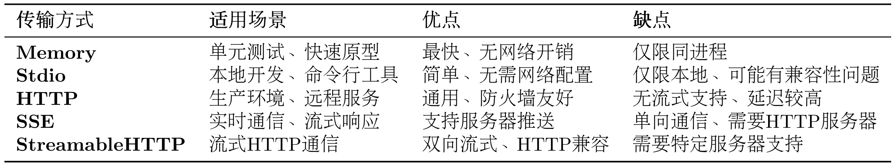
（2）传输方式使用示例
from hello_agents.tools import MCPTool
# 1. Memory Transport - 内存传输（用于测试）
# 不指定任何参数，使用内置演示服务器
mcp_tool = MCPTool()
# 2. Stdio Transport - 标准输入输出传输（本地开发）
# 使用命令列表启动本地服务器
mcp_tool = MCPTool(server_command=["python", "examples/mcp_example_server.py"])
# 3. Stdio Transport with Args - 带参数的命令传输
# 可以传递额外参数
mcp_tool = MCPTool(server_command=["python", "examples/mcp_example_server.py", "--debug"])
# 4. Stdio Transport - 社区服务器（npx方式）
# 使用npx启动社区MCP服务器
mcp_tool = MCPTool(server_command=["npx", "-y", "@modelcontextprotocol/server-filesystem", "."])
# 5. HTTP/SSE/StreamableHTTP Transport
# 注意：MCPTool主要用于Stdio和Memory传输
# 对于HTTP/SSE等远程传输，建议直接使用MCPClient
（3）Memory Transport - 内存传输
适用场景：单元测试、快速原型开发
from hello_agents.tools import MCPTool
# 使用内置演示服务器（Memory传输）
mcp_tool = MCPTool()
# 列出可用工具
result = mcp_tool.run({"action": "list_tools"})
print(result)
# 调用工具
result = mcp_tool.run({
"action": "call_tool",
"tool_name": "add",
"arguments": {"a": 10, "b": 20}
})
print(result)
（4）Stdio Transport - 标准输入输出传输
适用场景：本地开发、调试、Python 脚本服务器
from hello_agents.tools import MCPTool
# 方式1：使用自定义Python服务器
mcp_tool = MCPTool(server_command=["python", "my_mcp_server.py"])
# 方式2：使用社区服务器（文件系统）
mcp_tool = MCPTool(server_command=["npx", "-y", "@modelcontextprotocol/server-filesystem", "."])
# 列出工具
result = mcp_tool.run({"action": "list_tools"})
print(result)
# 调用工具
result = mcp_tool.run({
"action": "call_tool",
"tool_name": "read_file",
"arguments": {"path": "README.md"}
})
print(result)
（5）HTTP Transport - HTTP 传输
适用场景：生产环境、远程服务、微服务架构
# 注意：MCPTool 主要用于 Stdio 和 Memory 传输
# 对于 HTTP/SSE 等远程传输，建议使用底层的 MCPClient
import asyncio
from hello_agents.protocols import MCPClient
async def test_http_transport():
# 连接到远程 HTTP MCP 服务器
client = MCPClient("http://api.example.com/mcp")
async with client:
# 获取服务器信息
tools = await client.list_tools()
print(f"远程服务器工具: {len(tools)} 个")
# 调用远程工具
result = await client.call_tool("process_data", {
"data": "Hello, World!",
"operation": "uppercase"
})
print(f"远程处理结果: {result}")
# 注意：需要实际的 HTTP MCP 服务器
# asyncio.run(test_http_transport())
（6）SSE Transport - Server-Sent Events 传输
适用场景：实时通信、流式处理、长连接
# 注意：MCPTool 主要用于 Stdio 和 Memory 传输
# 对于 SSE 传输，建议使用底层的 MCPClient
import asyncio
from hello_agents.protocols import MCPClient
async def test_sse_transport():
# 连接到 SSE MCP 服务器
client = MCPClient(
"http://localhost:8080/sse",
transport_type="sse"
)
async with client:
# SSE 特别适合流式处理
result = await client.call_tool("stream_process", {
"input": "大量数据处理请求",
"stream": True
})
print(f"流式处理结果: {result}")
# 注意：需要支持 SSE 的 MCP 服务器
# asyncio.run(test_sse_transport())
（7）StreamableHTTP Transport - 流式 HTTP 传输
适用场景：需要双向流式通信的 HTTP 场景
# 注意：MCPTool 主要用于 Stdio 和 Memory 传输
# 对于 StreamableHTTP 传输，建议使用底层的 MCPClient
import asyncio
from hello_agents.protocols import MCPClient
async def test_streamable_http_transport():
# 连接到 StreamableHTTP MCP 服务器
client = MCPClient(
"http://localhost:8080/mcp",
transport_type="streamable_http"
)
async with client:
# 支持双向流式通信
tools = await client.list_tools()
print(f"StreamableHTTP 服务器工具: {len(tools)} 个")
# 注意：需要支持 StreamableHTTP 的 MCP 服务器
# asyncio.run(test_streamable_http_transport())
10.2.4 在智能体中使用 MCP 工具¶
前面我们学习了如何直接使用 MCP 客户端。但在实际应用中，我们更希望让智能体自动调用 MCP 工具，而不是手动编写调用代码。HelloAgents 提供了MCPTool包装器，让 MCP 服务器无缝集成到智能体的工具链中。
（1）MCP 工具的自动展开机制
HelloAgents 的MCPTool有一个特性：自动展开。当你添加一个 MCP 工具到 Agent 时，它会自动将 MCP 服务器提供的所有工具展开为独立的工具，让 Agent 可以像调用普通工具一样调用它们。
方式 1：使用内置演示服务器
我们在之前实现过计算器的工具函数，在这里将他转化为 MCP 的服务。这是最简单的使用方式。
from hello_agents import SimpleAgent, HelloAgentsLLM
from hello_agents.tools import MCPTool
agent = SimpleAgent(name="助手", llm=HelloAgentsLLM())
# 无需任何配置，自动使用内置演示服务器
mcp_tool = MCPTool(name="calculator")
agent.add_tool(mcp_tool)
# ✅ MCP工具 'calculator' 已展开为 6 个独立工具
# 智能体可以直接使用展开后的工具
response = agent.run("计算 25 乘以 16")
print(response) # 输出：25 乘以 16 的结果是 400
自动展开后的工具：
calculator_add- 加法计算器calculator_subtract- 减法计算器calculator_multiply- 乘法计算器calculator_divide- 除法计算器calculator_greet- 友好问候calculator_get_system_info- 获取系统信息
Agent 调用时只需提供参数，例如：[TOOL_CALL:calculator_multiply:a=25,b=16]，系统会自动处理类型转换和 MCP 调用。
方式 2：连接外部 MCP 服务器
在实际项目中，你需要连接到功能更强大的 MCP 服务器。这些服务器可以是： - 社区提供的官方服务器（如文件系统、GitHub、数据库等） - 你自己编写的自定义服务器（封装业务逻辑）
from hello_agents import SimpleAgent, HelloAgentsLLM
from hello_agents.tools import MCPTool
agent = SimpleAgent(name="文件助手", llm=HelloAgentsLLM())
# 示例1：连接到社区提供的文件系统服务器
fs_tool = MCPTool(
name="filesystem", # 指定唯一名称
description="访问本地文件系统",
server_command=["npx", "-y", "@modelcontextprotocol/server-filesystem", "."]
)
agent.add_tool(fs_tool)
# 示例2：连接到自定义的 Python MCP 服务器
# 关于如何编写自定义MCP服务器，请参考10.5章节
custom_tool = MCPTool(
name="custom_server", # 使用不同的名称
description="自定义业务逻辑服务器",
server_command=["python", "my_mcp_server.py"]
)
agent.add_tool(custom_tool)
# Agent现在可以自动使用这些工具！
response = agent.run("请读取my_README.md文件，并总结其中的主要内容")
print(response)
当使用多个 MCP 服务器时，务必为每个 MCPTool 指定不同的 name，这个 name 会作为前缀添加到展开的工具名前，避免冲突。例如：name="fs" 会展开为 fs_read_file、fs_write_file 等。如果你需要编写自己的 MCP 服务器来封装特定的业务逻辑，请参考 10.5 节内容。
（2）MCP 工具自动展开的工作原理
理解自动展开机制有助于你更好地使用 MCP 工具。让我们深入了解它是如何工作的：
# 用户代码
fs_tool = MCPTool(name="fs", server_command=[...])
agent.add_tool(fs_tool)
# 内部发生的事情：
# 1. MCPTool连接到服务器，发现14个工具
# 2. 为每个工具创建包装器：
# - fs_read_text_file (参数: path, tail, head)
# - fs_write_file (参数: path, content)
# - ...
# 3. 注册到Agent的工具注册表
# Agent调用
response = agent.run("读取README.md")
# Agent内部：
# 1. 识别需要调用 fs_read_text_file
# 2. 生成参数：path=README.md
# 3. 包装器转换为MCP格式：
# {"action": "call_tool", "tool_name": "read_text_file", "arguments": {"path": "README.md"}}
# 4. 调用MCP服务器
# 5. 返回文件内容
系统会根据工具的参数定义自动转换类型：
# Agent调用计算器
agent.run("计算 25 乘以 16")
# Agent生成：a=25,b=16 (字符串)
# 系统自动转换为：{"a": 25.0, "b": 16.0} (数字)
# MCP服务器接收到正确的数字类型
（3）实战案例：智能文档助手
让我们构建一个完整的智能文档助手，这里我们用一个简单的多智能体编排进行演示：
"""
多Agent协作的智能文档助手
使用两个SimpleAgent分工协作：
- Agent1：GitHub搜索专家
- Agent2：文档生成专家
"""
from hello_agents import SimpleAgent, HelloAgentsLLM
from hello_agents.tools import MCPTool
from dotenv import load_dotenv
# 加载.env文件中的环境变量
load_dotenv(dotenv_path="../HelloAgents/.env")
print("="*70)
print("多Agent协作的智能文档助手")
print("="*70)
# ============================================================
# Agent 1: GitHub搜索专家
# ============================================================
print("\n【步骤1】创建GitHub搜索专家...")
github_searcher = SimpleAgent(
name="GitHub搜索专家",
llm=HelloAgentsLLM(),
system_prompt="""你是一个GitHub搜索专家。
你的任务是搜索GitHub仓库并返回结果。
请返回清晰、结构化的搜索结果，包括：
- 仓库名称
- 简短描述
保持简洁，不要添加额外的解释。"""
)
# 添加GitHub工具
github_tool = MCPTool(
name="gh",
server_command=["npx", "-y", "@modelcontextprotocol/server-github"]
)
github_searcher.add_tool(github_tool)
# ============================================================
# Agent 2: 文档生成专家
# ============================================================
print("\n【步骤2】创建文档生成专家...")
document_writer = SimpleAgent(
name="文档生成专家",
llm=HelloAgentsLLM(),
system_prompt="""你是一个文档生成专家。
你的任务是根据提供的信息生成结构化的Markdown报告。
报告应该包括：
- 标题
- 简介
- 主要内容（分点列出，包括项目名称、描述等）
- 总结
请直接输出完整的Markdown格式报告内容，不要使用工具保存。"""
)
# 添加文件系统工具
fs_tool = MCPTool(
name="fs",
server_command=["npx", "-y", "@modelcontextprotocol/server-filesystem", "."]
)
document_writer.add_tool(fs_tool)
# ============================================================
# 执行任务
# ============================================================
print("\n" + "="*70)
print("开始执行任务...")
print("="*70)
try:
# 步骤1：GitHub搜索
print("\n【步骤3】Agent1 搜索GitHub...")
search_task = "搜索关于'AI agent'的GitHub仓库，返回前5个最相关的结果"
search_results = github_searcher.run(search_task)
print("\n搜索结果:")
print("-" * 70)
print(search_results)
print("-" * 70)
# 步骤2：生成报告
print("\n【步骤4】Agent2 生成报告...")
report_task = f"""
根据以下GitHub搜索结果，生成一份Markdown格式的研究报告：
{search_results}
报告要求：
1. 标题：# AI Agent框架研究报告
2. 简介：说明这是关于AI Agent的GitHub项目调研
3. 主要发现：列出找到的项目及其特点（包括名称、描述等）
4. 总结：总结这些项目的共同特点
请直接输出完整的Markdown格式报告。
"""
report_content = document_writer.run(report_task)
print("\n报告内容:")
print("=" * 70)
print(report_content)
print("=" * 70)
# 步骤3：保存报告
print("\n【步骤5】保存报告到文件...")
import os
try:
with open("report.md", "w", encoding="utf-8") as f:
f.write(report_content)
print("✅ 报告已保存到 report.md")
# 验证文件
file_size = os.path.getsize("report.md")
print(f"✅ 文件大小: {file_size} 字节")
except Exception as e:
print(f"❌ 保存失败: {e}")
print("\n" + "="*70)
print("任务完成！")
print("="*70)
except Exception as e:
print(f"\n❌ 错误: {e}")
import traceback
traceback.print_exc()
github_searcher会在这个过程中调用gh_search_repositories搜索 GitHub 项目。得到的结果会返回给document_writer当做输入，进一步指导报告的生成，最后保存报告到 report.md。
10.2.5 MCP 社区生态¶
MCP 协议的一个巨大优势是丰富的社区生态。Anthropic 和社区开发者已经创建了大量现成的 MCP 服务器，涵盖文件系统、数据库、API 服务等各种场景。这意味着你不需要从零开始编写工具适配器，可以直接使用这些经过验证的服务器。
这里给出 MCP 社区的三个资源库：
- Awesome MCP Servers (https://github.com/punkpeye/awesome-mcp-servers)
- 社区维护的 MCP 服务器精选列表
- 包含各种第三方服务器
-
按功能分类，易于查找
-
MCP Servers Website (https://mcpservers.org/)
- 官方 MCP 服务器目录网站
- 提供搜索和筛选功能
-
包含使用说明和示例
-
Official MCP Servers (https://github.com/modelcontextprotocol/servers)
- Anthropic 官方维护的服务器
- 质量最高、文档最完善
- 包含常用服务的实现
表 10.5 和 10.6 给出常用的官方 MCP 服务器和社区热门 MCP 服务器：
表 10.5 常用官方 MCP 服务器
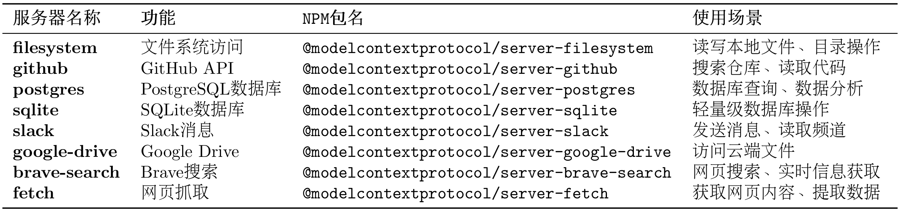
表 10.6 社区热门 MCP 服务器
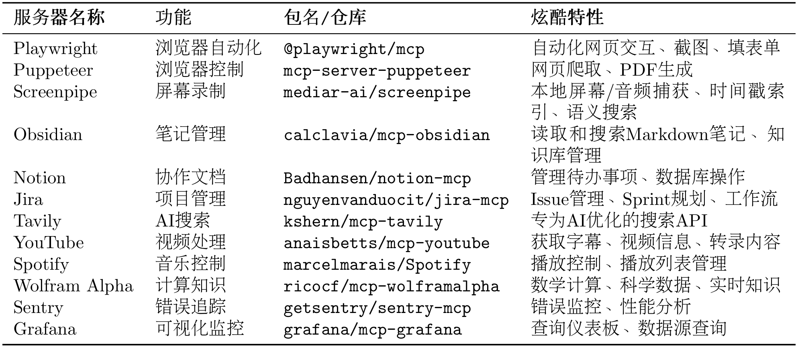
以下是一些特别有趣的案例 TODO 可供参考：
- 自动化网页测试（Playwright）
# Agent可以自动：
# - 打开浏览器访问网站
# - 填写表单并提交
# - 截图验证结果
# - 生成测试报告
playwright_tool = MCPTool(
name="playwright",
server_command=["npx", "-y", "@playwright/mcp"]
)
-
智能笔记助手（Obsidian + Perplexity）
-
项目管理自动化（Jira + GitHub）
-
内容创作工作流（YouTube + Notion + Spotify）
通过这一节内容的讲解，希望你能探索更多 MCP 的实现案例，也欢迎投稿至 Helloagents！接下来，让我们学习 A2A 协议。
10.3 A2A 协议实战¶
A2A（Agent-to-Agent）是一种支持智能体之间直接通信与协作的协议。
10.3.1 协议设计动机¶
MCP 协议解决了智能体与工具的交互，而 A2A 协议则解决智能体之间的协作问题。在一个需要多智能体（如研究员、撰写员、编辑）协作的任务中，它们需要通信、委托任务、协商能力和同步状态。
传统的中央协调器（星型拓扑）方案存在三个主要问题：
- 单点故障：协调器失效导致系统整体瘫痪。
- 性能瓶颈：所有通信都经过中心节点，限制了并发。
- 扩展困难：增加或修改智能体需要改动中心逻辑。
A2A 协议采用点对点（P2P）架构（网状拓扑），允许智能体直接通信，从根本上解决了上述问题。它的核心是任务（Task）和工件（Artifact）这两个抽象概念，这是它与 MCP 最大的区别，如表 10.7 所示。
表 10.7 A2A 核心概念
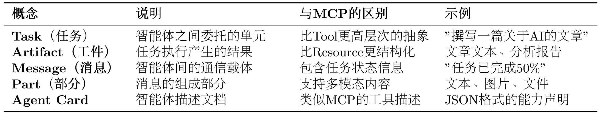
为实现对协作过程的管理，A2A 为任务定义了标准化的生命周期，包括创建、协商、代理、执行中、完成、失败等状态，可见图 10.7。
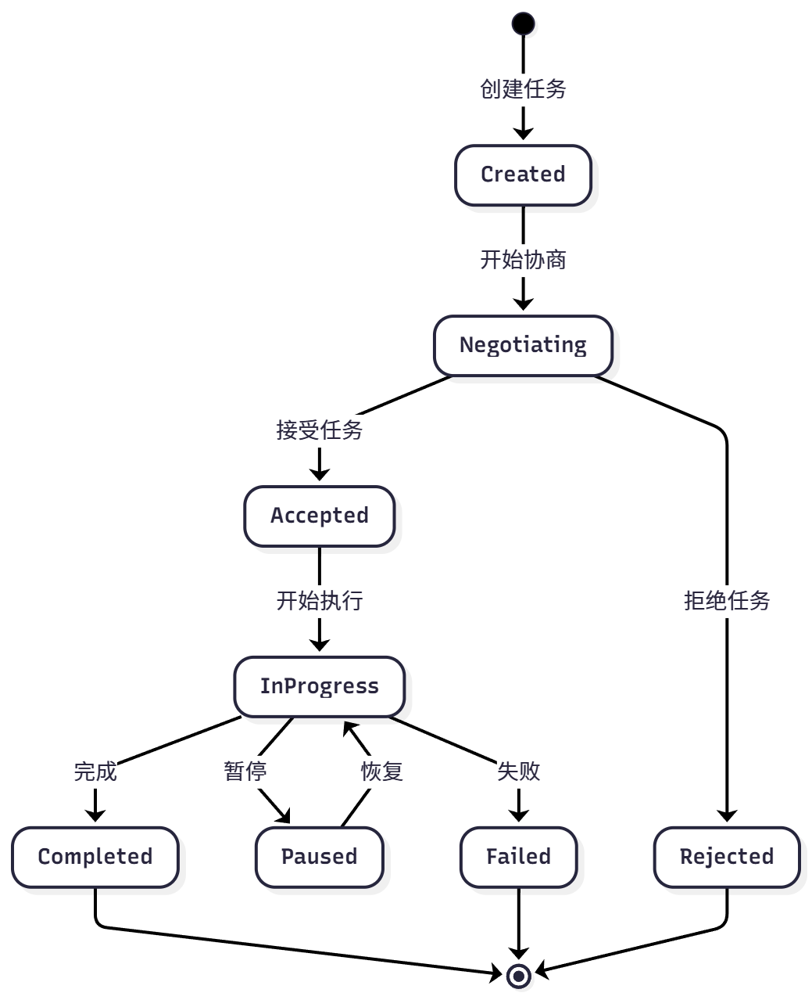
图 10.7 A2A 任务周期
该机制使智能体可以进行任务协商、进度跟踪和异常处理。
A2A 请求生命周期是一个序列，详细说明了请求遵循的四个主要步骤：代理发现、身份验证、发送消息 API 和发送消息流 API。下图 10.8 借鉴了官网的流程图，用来展示了操作流程，说明了客户端、A2A 服务器和身份验证服务器之间的交互。
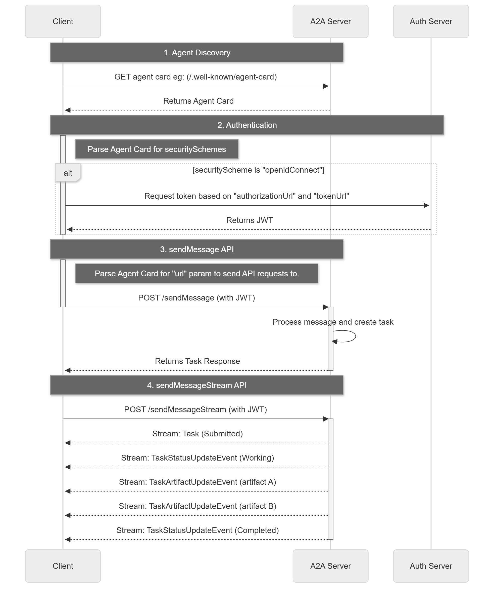
图 10.8 A2A 请求生命周期
10.3.2 使用 A2A 协议实战¶
A2A 现有实现大部分为Sample Code，并且即使有 Python 的实现也较为繁琐，因此这里我们只采用模拟协议思想的方式，通过 A2A-SDK 来继承部分功能实现。
（2）创建简单的 A2A 智能体
让我们创建一个 A2A 的智能体，同样是计算器案例作为演示：
from hello_agents.protocols.a2a.implementation import A2AServer, A2A_AVAILABLE
def create_calculator_agent():
"""创建一个计算器智能体"""
if not A2A_AVAILABLE:
print("❌ A2A SDK 未安装，请运行: pip install a2a-sdk")
return None
print("🧮 创建计算器智能体")
# 创建 A2A 服务器
calculator = A2AServer(
name="calculator-agent",
description="专业的数学计算智能体",
version="1.0.0",
capabilities={
"math": ["addition", "subtraction", "multiplication", "division"],
"advanced": ["power", "sqrt", "factorial"]
}
)
# 添加基础计算技能
@calculator.skill("add")
def add_numbers(query: str) -> str:
"""加法计算"""
try:
# 简单解析 "计算 5 + 3" 格式
parts = query.replace("计算", "").replace("加", "+").replace("加上", "+")
if "+" in parts:
numbers = [float(x.strip()) for x in parts.split("+")]
result = sum(numbers)
return f"计算结果: {' + '.join(map(str, numbers))} = {result}"
else:
return "请使用格式: 计算 5 + 3"
except Exception as e:
return f"计算错误: {e}"
@calculator.skill("multiply")
def multiply_numbers(query: str) -> str:
"""乘法计算"""
try:
parts = query.replace("计算", "").replace("乘以", "*").replace("×", "*")
if "*" in parts:
numbers = [float(x.strip()) for x in parts.split("*")]
result = 1
for num in numbers:
result *= num
return f"计算结果: {' × '.join(map(str, numbers))} = {result}"
else:
return "请使用格式: 计算 5 * 3"
except Exception as e:
return f"计算错误: {e}"
@calculator.skill("info")
def get_info(query: str) -> str:
"""获取智能体信息"""
return f"我是 {calculator.name}，可以进行基础数学计算。支持的技能: {list(calculator.skills.keys())}"
print(f"✅ 计算器智能体创建成功，支持技能: {list(calculator.skills.keys())}")
return calculator
# 创建智能体
calc_agent = create_calculator_agent()
if calc_agent:
# 测试技能
print("\n🧪 测试智能体技能:")
test_queries = [
"获取信息",
"计算 10 + 5",
"计算 6 * 7"
]
for query in test_queries:
if "信息" in query:
result = calc_agent.skills["info"](query)
elif "+" in query:
result = calc_agent.skills["add"](query)
elif "*" in query or "×" in query:
result = calc_agent.skills["multiply"](query)
else:
result = "未知查询类型"
print(f" 📝 查询: {query}")
print(f" 🤖 回复: {result}")
print()
（2）自定义 A2A 智能体
你也可以创建自己的 A2A 智能体，这里只是进行简单演示：
from hello_agents.protocols.a2a.implementation import A2AServer, A2A_AVAILABLE
def create_custom_agent():
"""创建自定义智能体"""
if not A2A_AVAILABLE:
print("请先安装 A2A SDK: pip install a2a-sdk")
return None
# 创建智能体
agent = A2AServer(
name="my-custom-agent",
description="我的自定义智能体",
capabilities={"custom": ["skill1", "skill2"]}
)
# 添加技能
@agent.skill("greet")
def greet_user(name: str) -> str:
"""问候用户"""
return f"你好，{name}！我是自定义智能体。"
@agent.skill("calculate")
def simple_calculate(expression: str) -> str:
"""简单计算"""
try:
# 安全的计算（仅支持基本运算）
allowed_chars = set('0123456789+-*/(). ')
if all(c in allowed_chars for c in expression):
result = eval(expression)
return f"计算结果: {expression} = {result}"
else:
return "错误: 只支持基本数学运算"
except Exception as e:
return f"计算错误: {e}"
return agent
# 创建并测试自定义智能体
custom_agent = create_custom_agent()
if custom_agent:
# 测试技能
print("测试问候技能:")
result1 = custom_agent.skills["greet"]("张三")
print(result1)
print("\n测试计算技能:")
result2 = custom_agent.skills["calculate"]("10 + 5 * 2")
print(result2)
10.3.3 使用 HelloAgents A2A 工具¶
HelloAgents 提供了统一的 A2A 工具接口。
（1）创建 A2A Agent 服务端
首先，让我们创建一个 Agent 服务端：
from hello_agents.protocols import A2AServer
import threading
import time
# 创建研究员Agent服务
researcher = A2AServer(
name="researcher",
description="负责搜索和分析资料的Agent",
version="1.0.0"
)
# 定义技能
@researcher.skill("research")
def handle_research(text: str) -> str:
"""处理研究请求"""
import re
match = re.search(r'research\s+(.+)', text, re.IGNORECASE)
topic = match.group(1).strip() if match else text
# 实际的研究逻辑（这里简化）
result = {
"topic": topic,
"findings": f"关于{topic}的研究结果...",
"sources": ["来源1", "来源2", "来源3"]
}
return str(result)
# 在后台启动服务
def start_server():
researcher.run(host="localhost", port=5000)
if __name__ == "__main__":
server_thread = threading.Thread(target=start_server, daemon=True)
server_thread.start()
print("✅ 研究员Agent服务已启动在 http://localhost:5000")
# 保持程序运行
try:
while True:
time.sleep(1)
except KeyboardInterrupt:
print("\n服务已停止")
（2）创建 A2A Agent 客户端
现在，让我们创建一个客户端来与服务端通信：
from hello_agents.protocols import A2AClient
# 创建客户端连接到研究员Agent
client = A2AClient("http://localhost:5000")
# 发送研究请求
response = client.execute_skill("research", "research AI在医疗领域的应用")
print(f"收到响应：{response.get('result')}")
# 输出：
# 收到响应：{'topic': 'AI在医疗领域的应用', 'findings': '关于AI在医疗领域的应用的研究结果...', 'sources': ['来源1', '来源2', '来源3']}
（3）创建 Agent 网络
对于多个 Agent 的协作，我们可以让多个 Agent 相互连接：
from hello_agents.protocols import A2AServer, A2AClient
import threading
import time
# 1. 创建多个Agent服务
researcher = A2AServer(
name="researcher",
description="研究员"
)
@researcher.skill("research")
def do_research(text: str) -> str:
import re
match = re.search(r'research\s+(.+)', text, re.IGNORECASE)
topic = match.group(1).strip() if match else text
return str({"topic": topic, "findings": f"{topic}的研究结果"})
writer = A2AServer(
name="writer",
description="撰写员"
)
@writer.skill("write")
def write_article(text: str) -> str:
import re
match = re.search(r'write\s+(.+)', text, re.IGNORECASE)
content = match.group(1).strip() if match else text
# 尝试解析研究数据
try:
data = eval(content)
topic = data.get("topic", "未知主题")
findings = data.get("findings", "无研究结果")
except:
topic = "未知主题"
findings = content
return f"# {topic}\n\n基于研究：{findings}\n\n文章内容..."
editor = A2AServer(
name="editor",
description="编辑"
)
@editor.skill("edit")
def edit_article(text: str) -> str:
import re
match = re.search(r'edit\s+(.+)', text, re.IGNORECASE)
article = match.group(1).strip() if match else text
result = {
"article": article + "\n\n[已编辑优化]",
"feedback": "文章质量良好",
"approved": True
}
return str(result)
# 2. 启动所有服务
threading.Thread(target=lambda: researcher.run(port=5000), daemon=True).start()
threading.Thread(target=lambda: writer.run(port=5001), daemon=True).start()
threading.Thread(target=lambda: editor.run(port=5002), daemon=True).start()
time.sleep(2) # 等待服务启动
# 3. 创建客户端连接到各个Agent
researcher_client = A2AClient("http://localhost:5000")
writer_client = A2AClient("http://localhost:5001")
editor_client = A2AClient("http://localhost:5002")
# 4. 协作流程
def create_content(topic):
# 步骤1：研究
research = researcher_client.execute_skill("research", f"research {topic}")
research_data = research.get('result', '')
# 步骤2：撰写
article = writer_client.execute_skill("write", f"write {research_data}")
article_content = article.get('result', '')
# 步骤3：编辑
final = editor_client.execute_skill("edit", f"edit {article_content}")
return final.get('result', '')
# 使用
result = create_content("AI在医疗领域的应用")
print(f"\n最终结果：\n{result}")
10.3.4 在智能体中使用 A2A 工具¶
现在让我们看看如何将 A2A 集成到 HelloAgents 的智能体中。
（1）使用 A2ATool 包装器
from hello_agents import SimpleAgent, HelloAgentsLLM
from hello_agents.tools import A2ATool
from dotenv import load_dotenv
load_dotenv()
llm = HelloAgentsLLM()
# 假设已经有一个研究员Agent服务运行在 http://localhost:5000
# 创建协调者Agent
coordinator = SimpleAgent(name="协调者", llm=llm)
# 添加A2A工具，连接到研究员Agent
researcher_tool = A2ATool(
name="researcher",
description="研究员Agent，可以搜索和分析资料",
agent_url="http://localhost:5000"
)
coordinator.add_tool(researcher_tool)
# 协调者可以调用研究员Agent
response = coordinator.run("请让研究员帮我研究AI在教育领域的应用")
print(response)
（2）实战案例：智能客服系统
让我们构建一个完整的智能客服系统，包含三个 Agent： - 接待员：分析客户问题类型 - 技术专家：回答技术问题 - 销售顾问：回答销售问题
from hello_agents import SimpleAgent, HelloAgentsLLM
from hello_agents.tools import A2ATool
from hello_agents.protocols import A2AServer
import threading
import time
from dotenv import load_dotenv
load_dotenv()
llm = HelloAgentsLLM()
# 1. 创建技术专家Agent服务
tech_expert = A2AServer(
name="tech_expert",
description="技术专家，回答技术问题"
)
@tech_expert.skill("answer")
def answer_tech_question(text: str) -> str:
import re
match = re.search(r'answer\s+(.+)', text, re.IGNORECASE)
question = match.group(1).strip() if match else text
# 实际应用中，这里会调用LLM或知识库
return f"技术回答：关于'{question}'，我建议您查看我们的技术文档..."
# 2. 创建销售顾问Agent服务
sales_advisor = A2AServer(
name="sales_advisor",
description="销售顾问，回答销售问题"
)
@sales_advisor.skill("answer")
def answer_sales_question(text: str) -> str:
import re
match = re.search(r'answer\s+(.+)', text, re.IGNORECASE)
question = match.group(1).strip() if match else text
return f"销售回答：关于'{question}'，我们有特别优惠..."
# 3. 启动服务
threading.Thread(target=lambda: tech_expert.run(port=6000), daemon=True).start()
threading.Thread(target=lambda: sales_advisor.run(port=6001), daemon=True).start()
time.sleep(2)
# 4. 创建接待员Agent（使用HelloAgents的SimpleAgent）
receptionist = SimpleAgent(
name="接待员",
llm=llm,
system_prompt="""你是客服接待员，负责：
1. 分析客户问题类型（技术问题 or 销售问题）
2. 将问题转发给相应的专家
3. 整理专家的回答并返回给客户
请保持礼貌和专业。"""
)
# 添加技术专家工具
tech_tool = A2ATool(
agent_url="http://localhost:6000",
name="tech_expert",
description="技术专家，回答技术相关问题"
)
receptionist.add_tool(tech_tool)
# 添加销售顾问工具
sales_tool = A2ATool(
agent_url="http://localhost:6001",
name="sales_advisor",
description="销售顾问，回答价格、购买相关问题"
)
receptionist.add_tool(sales_tool)
# 5. 处理客户咨询
def handle_customer_query(query):
print(f"\n客户咨询：{query}")
print("=" * 50)
response = receptionist.run(query)
print(f"\n客服回复：{response}")
print("=" * 50)
# 测试不同类型的问题
if __name__ == "__main__":
handle_customer_query("你们的API如何调用？")
handle_customer_query("企业版的价格是多少？")
handle_customer_query("如何集成到我的Python项目中？")
（3）高级用法：Agent 间协商
A2A 协议还支持 Agent 间的协商机制：
from hello_agents.protocols import A2AServer, A2AClient
import threading
import time
# 创建两个需要协商的Agent
agent1 = A2AServer(
name="agent1",
description="Agent 1"
)
@agent1.skill("propose")
def handle_proposal(text: str) -> str:
"""处理协商提案"""
import re
# 解析提案
match = re.search(r'propose\s+(.+)', text, re.IGNORECASE)
proposal_str = match.group(1).strip() if match else text
try:
proposal = eval(proposal_str)
task = proposal.get("task")
deadline = proposal.get("deadline")
# 评估提案
if deadline >= 7: # 至少需要7天
result = {"accepted": True, "message": "接受提案"}
else:
result = {
"accepted": False,
"message": "时间太紧",
"counter_proposal": {"deadline": 7}
}
return str(result)
except:
return str({"accepted": False, "message": "无效的提案格式"})
agent2 = A2AServer(
name="agent2",
description="Agent 2"
)
@agent2.skill("negotiate")
def negotiate_task(text: str) -> str:
"""发起协商"""
import re
# 解析任务和截止日期
match = re.search(r'negotiate\s+task:(.+?)\s+deadline:(\d+)', text, re.IGNORECASE)
if match:
task = match.group(1).strip()
deadline = int(match.group(2))
# 向agent1发送提案
proposal = {"task": task, "deadline": deadline}
return str({"status": "negotiating", "proposal": proposal})
else:
return str({"status": "error", "message": "无效的协商请求"})
# 启动服务
threading.Thread(target=lambda: agent1.run(port=7000), daemon=True).start()
threading.Thread(target=lambda: agent2.run(port=7001), daemon=True).start()
10.4 ANP 协议实战¶
在 MCP 协议解决了工具调用、A2A 协议解决点对点智能体协作之后，ANP 协议则专注于解决大规模、开放网络环境下的智能体管理问题。
在 10.2 和 10.3 节中，我们学习了 MCP（工具访问）和 A2A（智能体协作）。现在，让我们学习 ANP（Agent Network Protocol）协议，它专注于构建大规模、开放的智能体网络。
10.4.1 协议目标¶
当一个网络中存在大量功能各异的智能体（例如，自然语言处理、图像识别、数据分析等）时，系统会面临一系列挑战：
- 服务发现：当新任务到达时，如何快速找到能够处理该任务的智能体？
- 智能路由：如果多个智能体都能处理同一任务，如何选择最合适的一个（如根据负载、成本等）并向其分派任务？
- 动态扩展：如何让新加入网络的智能体被其他成员发现和调用？
ANP 的设计目标就是提供一套标准化的机制，来解决上述的服务发现、路由选择和网络扩展性问题。
为实现其设计目标，ANP 定义了以下几个核心概念，如表 10.8 所示：
表 10.8 ANP 核心概念
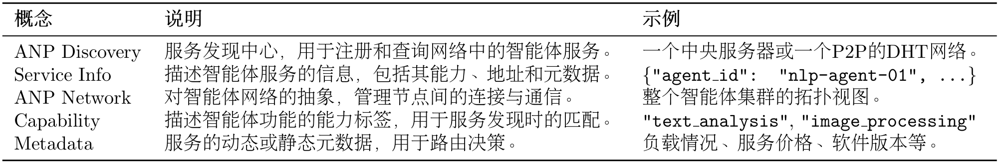
我们同样借用官方的入门指南来介绍 ANP 的架构设计，如图 10.9 所示
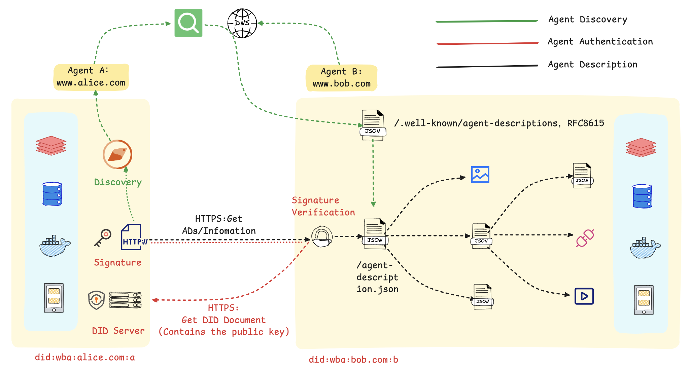
图 10.9 ANP 整体流程
在这个流程图里，主要包括以下几个步骤：
1. 服务的发现与匹配：首先，智能体 A 通过一个公开的发现服务，基于语义或功能描述进行查询，以定位到符合其任务需求的智能体 B。该发现服务通过预先爬取各智能体对外暴露的标准端点（.well-known/agent-descriptions）来建立索引，从而实现服务需求方与提供方的动态匹配。
2. 基于 DID 的身份验证：在交互开始时，智能体 A 使用其私钥对包含自身 DID 的请求进行签名。智能体 B 收到后，通过解析该 DID 获取对应的公钥，并以此验证签名的真实性与请求的完整性，从而建立起双方的可信通信。
3. 标准化的服务执行：身份验证通过后，智能体 B 响应请求，双方依据预定义的标准接口和数据格式进行数据交换或服务调用（如预订、查询等）。标准化的交互流程是实现跨平台、跨系统互操作性的基础。
总而言之，该机制的核心是利用 DID 构建了一个去中心化的信任根基，并借助标准化的描述协议实现了服务的动态发现。这套方法使得智能体能够在无需中央协调的前提下，安全、高效地在互联网上形成协作网络。
10.4.2 使用 ANP 服务发现¶
（1）创建服务发现中心
from hello_agents.protocols import ANPDiscovery, register_service
# 创建服务发现中心
discovery = ANPDiscovery()
# 注册Agent服务
register_service(
discovery=discovery,
service_id="nlp_agent_1",
service_name="NLP处理专家A",
service_type="nlp",
capabilities=["text_analysis", "sentiment_analysis", "ner"],
endpoint="http://localhost:8001",
metadata={"load": 0.3, "price": 0.01, "version": "1.0.0"}
)
register_service(
discovery=discovery,
service_id="nlp_agent_2",
service_name="NLP处理专家B",
service_type="nlp",
capabilities=["text_analysis", "translation"],
endpoint="http://localhost:8002",
metadata={"load": 0.7, "price": 0.02, "version": "1.1.0"}
)
print("✅ 服务注册完成")
（2）发现服务
from hello_agents.protocols import discover_service
# 按类型查找
nlp_services = discover_service(discovery, service_type="nlp")
print(f"找到 {len(nlp_services)} 个NLP服务")
# 选择负载最低的服务
best_service = min(nlp_services, key=lambda s: s.metadata.get("load", 1.0))
print(f"最佳服务：{best_service.service_name} (负载: {best_service.metadata['load']})")
（3）构建 Agent 网络
from hello_agents.protocols import ANPNetwork
# 创建网络
network = ANPNetwork(network_id="ai_cluster")
# 添加节点
for service in discovery.list_all_services():
network.add_node(service.service_id, service.endpoint)
# 建立连接（根据能力匹配）
network.connect_nodes("nlp_agent_1", "nlp_agent_2")
stats = network.get_network_stats()
print(f"✅ 网络构建完成，共 {stats['total_nodes']} 个节点")
10.4.3 实战案例¶
让我们构建一个完整的分布式任务调度系统：
from hello_agents.protocols import ANPDiscovery, register_service
from hello_agents import SimpleAgent, HelloAgentsLLM
from hello_agents.tools.builtin import ANPTool
import random
from dotenv import load_dotenv
load_dotenv()
llm = HelloAgentsLLM()
# 1. 创建服务发现中心
discovery = ANPDiscovery()
# 2. 注册多个计算节点
for i in range(10):
register_service(
discovery=discovery,
service_id=f"compute_node_{i}",
service_name=f"计算节点{i}",
service_type="compute",
capabilities=["data_processing", "ml_training"],
endpoint=f"http://node{i}:8000",
metadata={
"load": random.uniform(0.1, 0.9),
"cpu_cores": random.choice([4, 8, 16]),
"memory_gb": random.choice([16, 32, 64]),
"gpu": random.choice([True, False])
}
)
print(f"✅ 注册了 {len(discovery.list_all_services())} 个计算节点")
# 3. 创建任务调度Agent
scheduler = SimpleAgent(
name="任务调度器",
llm=llm,
system_prompt="""你是一个智能任务调度器，负责：
1. 分析任务需求
2. 选择最合适的计算节点
3. 分配任务
选择节点时考虑：负载、CPU核心数、内存、GPU等因素。"""
)
# 添加ANP工具
anp_tool = ANPTool(
name="service_discovery",
description="服务发现工具，可以查找和选择计算节点",
discovery=discovery
)
scheduler.add_tool(anp_tool)
# 4. 智能任务分配
def assign_task(task_description):
print(f"\n任务：{task_description}")
print("=" * 50)
# 让Agent智能选择节点
response = scheduler.run(f"""
请为以下任务选择最合适的计算节点：
{task_description}
要求：
1. 列出所有可用节点
2. 分析每个节点的特点
3. 选择最合适的节点
4. 说明选择理由
""")
print(response)
print("=" * 50)
# 测试不同类型的任务
assign_task("训练一个大型深度学习模型，需要GPU支持")
assign_task("处理大量文本数据，需要高内存")
assign_task("运行轻量级数据分析任务")
这是一个负载均衡示例
from hello_agents.protocols import ANPDiscovery, register_service
import random
# 创建服务发现中心
discovery = ANPDiscovery()
# 注册多个相同类型的服务
for i in range(5):
register_service(
discovery=discovery,
service_id=f"api_server_{i}",
service_name=f"API服务器{i}",
service_type="api",
capabilities=["rest_api"],
endpoint=f"http://api{i}:8000",
metadata={"load": random.uniform(0.1, 0.9)}
)
# 负载均衡函数
def get_best_server():
"""选择负载最低的服务器"""
servers = discovery.discover_services(service_type="api")
if not servers:
return None
best = min(servers, key=lambda s: s.metadata.get("load", 1.0))
return best
# 模拟请求分配
for i in range(10):
server = get_best_server()
print(f"请求 {i+1} -> {server.service_name} (负载: {server.metadata['load']:.2f})")
# 更新负载（模拟）
server.metadata["load"] += 0.1
10.5 构建自定义 MCP 服务器¶
在前面的章节中，我们学习了如何使用现有的 MCP 服务。并且也了解到了不同协议的特点。现在，让我们学习如何构建自己的 MCP 服务器。
10.5.1 创建你的第一个 MCP 服务器¶
（1）为什么要构建自定义 MCP 服务器？
虽然可以直接使用公开的 MCP 服务，但在许多实际应用场景中，需要构建自定义的 MCP 服务器以满足特定需求。
主要动机包括以下几点：
- 封装业务逻辑：将企业内部特有的业务流程或复杂操作封装为标准化的 MCP 工具，供智能体统一调用。
- 访问私有数据：创建一个安全可控的接口或代理，用于访问内部数据库、API 或其他无法对公网暴露的私有数据源。
- 性能专项优化：针对高频调用或对响应延迟有严苛要求的应用场景，进行深度优化。
- 功能定制扩展：实现标准 MCP 服务未提供的特定功能，例如集成专有算法模型或连接特定的硬件设备。
（2）教学案例：天气查询 MCP 服务器
让我们从一个简单的天气查询服务器开始，逐步学习 MCP 服务器开发：
#!/usr/bin/env python3
"""天气查询 MCP 服务器"""
import json
import requests
import os
from datetime import datetime
from typing import Dict, Any
from hello_agents.protocols import MCPServer
# 创建 MCP 服务器
weather_server = MCPServer(name="weather-server", description="真实天气查询服务")
CITY_MAP = {
"北京": "Beijing", "上海": "Shanghai", "广州": "Guangzhou",
"深圳": "Shenzhen", "杭州": "Hangzhou", "成都": "Chengdu",
"重庆": "Chongqing", "武汉": "Wuhan", "西安": "Xi'an",
"南京": "Nanjing", "天津": "Tianjin", "苏州": "Suzhou"
}
def get_weather_data(city: str) -> Dict[str, Any]:
"""从 wttr.in 获取天气数据"""
city_en = CITY_MAP.get(city, city)
url = f"https://wttr.in/{city_en}?format=j1"
response = requests.get(url, timeout=10)
response.raise_for_status()
data = response.json()
current = data["current_condition"][0]
return {
"city": city,
"temperature": float(current["temp_C"]),
"feels_like": float(current["FeelsLikeC"]),
"humidity": int(current["humidity"]),
"condition": current["weatherDesc"][0]["value"],
"wind_speed": round(float(current["windspeedKmph"]) / 3.6, 1),
"visibility": float(current["visibility"]),
"timestamp": datetime.now().strftime("%Y-%m-%d %H:%M:%S")
}
# 定义工具函数
def get_weather(city: str) -> str:
"""获取指定城市的当前天气"""
try:
weather_data = get_weather_data(city)
return json.dumps(weather_data, ensure_ascii=False, indent=2)
except Exception as e:
return json.dumps({"error": str(e), "city": city}, ensure_ascii=False)
def list_supported_cities() -> str:
"""列出所有支持的中文城市"""
result = {"cities": list(CITY_MAP.keys()), "count": len(CITY_MAP)}
return json.dumps(result, ensure_ascii=False, indent=2)
def get_server_info() -> str:
"""获取服务器信息"""
info = {
"name": "Weather MCP Server",
"version": "1.0.0",
"tools": ["get_weather", "list_supported_cities", "get_server_info"]
}
return json.dumps(info, ensure_ascii=False, indent=2)
# 注册工具到服务器
weather_server.add_tool(get_weather)
weather_server.add_tool(list_supported_cities)
weather_server.add_tool(get_server_info)
if __name__ == "__main__":
weather_server.run()
（3）测试自定义 MCP 服务器
然后创建测试脚本：
#!/usr/bin/env python3
"""测试天气查询 MCP 服务器"""
import asyncio
import json
import sys
import os
sys.path.insert(0, os.path.join(os.path.dirname(__file__), '..', 'HelloAgents'))
from hello_agents.protocols.mcp.client import MCPClient
async def test_weather_server():
server_script = os.path.join(os.path.dirname(__file__), "14_weather_mcp_server.py")
client = MCPClient(["python", server_script])
try:
async with client:
# 测试1: 获取服务器信息
info = json.loads(await client.call_tool("get_server_info", {}))
print(f"服务器: {info['name']} v{info['version']}")
# 测试2: 列出支持的城市
cities = json.loads(await client.call_tool("list_supported_cities", {}))
print(f"支持城市: {cities['count']} 个")
# 测试3: 查询北京天气
weather = json.loads(await client.call_tool("get_weather", {"city": "北京"}))
if "error" not in weather:
print(f"\n北京天气: {weather['temperature']}°C, {weather['condition']}")
# 测试4: 查询深圳天气
weather = json.loads(await client.call_tool("get_weather", {"city": "深圳"}))
if "error" not in weather:
print(f"深圳天气: {weather['temperature']}°C, {weather['condition']}")
print("\n✅ 所有测试完成！")
except Exception as e:
print(f"❌ 测试失败: {e}")
if __name__ == "__main__":
asyncio.run(test_weather_server())
（4）在 Agent 中使用自定义 MCP 服务器
"""在 Agent 中使用天气 MCP 服务器"""
import os
from dotenv import load_dotenv
from hello_agents import SimpleAgent, HelloAgentsLLM
from hello_agents.tools import MCPTool
load_dotenv()
def create_weather_assistant():
"""创建天气助手"""
llm = HelloAgentsLLM()
assistant = SimpleAgent(
name="天气助手",
llm=llm,
system_prompt="""你是天气助手，可以查询城市天气。
使用 get_weather 工具查询天气，支持中文城市名。
"""
)
# 添加天气 MCP 工具
server_script = os.path.join(os.path.dirname(__file__), "14_weather_mcp_server.py")
weather_tool = MCPTool(server_command=["python", server_script])
assistant.add_tool(weather_tool)
return assistant
def demo():
"""演示"""
assistant = create_weather_assistant()
print("\n查询北京天气：")
response = assistant.run("北京今天天气怎么样？")
print(f"回答: {response}\n")
def interactive():
"""交互模式"""
assistant = create_weather_assistant()
while True:
user_input = input("\n你: ").strip()
if user_input.lower() in ['quit', 'exit']:
break
response = assistant.run(user_input)
print(f"助手: {response}")
if __name__ == "__main__":
import sys
if len(sys.argv) > 1 and sys.argv[1] == "demo":
demo()
else:
interactive()
🔗 连接到 MCP 服务器...
✅ 连接成功！
🔌 连接已断开
✅ 工具 'mcp_get_weather' 已注册。
✅ 工具 'mcp_list_supported_cities' 已注册。
✅ 工具 'mcp_get_server_info' 已注册。
✅ MCP工具 'mcp' 已展开为 3 个独立工具
你: 我想查询北京的天气
🔗 连接到 MCP 服务器...
✅ 连接成功！
🔌 连接已断开
助手: 当前北京的天气情况如下：
- 温度：10.0°C
- 体感温度：9.0°C
- 湿度：94%
- 天气状况：小雨
- 风速：1.7米/秒
- 能见度：10.0公里
- 时间戳：2025年10月9日 13:46:40
请注意携带雨具，并根据天气变化适当调整着装。
10.5.2 上传 MCP 服务器¶
我们创建了一个真实的天气查询 MCP 服务器。现在，让我们将它发布到 Smithery 平台，让全世界的开发者都能使用我们的服务。
（1）什么是 Smithery？
Smithery 是 MCP 服务器的官方发布平台，类似于 Python 的 PyPI 或 Node.js 的 npm。通过 Smithery，用户可以：
- 🔍 发现和搜索 MCP 服务器
- 📦 一键安装 MCP 服务器
- 📊 查看服务器的使用统计和评价
- 🔄 自动获取服务器更新
（2）准备发布
首先，我们需要将项目整理成标准的发布格式，这个文件夹已经在code目录下整理好，可供大家参考：
weather-mcp-server/
├── README.md # 项目说明文档
├── LICENSE # 开源许可证
├── Dockerfile # Docker 构建配置（推荐）
├── pyproject.toml # Python 项目配置（必需）
├── requirements.txt # Python 依赖
├── smithery.yaml # Smithery 配置文件（必需）
└── server.py # MCP 服务器主文件
需要注意的是，smithery.yaml是 Smithery 平台的配置文件：
name: weather-mcp-server
displayName: Weather MCP Server
description: Real-time weather query MCP server based on HelloAgents framework
version: 1.0.0
author: HelloAgents Team
homepage: https://github.com/yourusername/weather-mcp-server
license: MIT
categories:
- weather
- data
tags:
- weather
- real-time
- helloagents
- wttr
runtime: container
build:
dockerfile: Dockerfile
dockerBuildPath: .
startCommand:
type: http
tools:
- name: get_weather
description: Get current weather for a city
- name: list_supported_cities
description: List all supported cities
- name: get_server_info
description: Get server information
配置说明：
name: 服务器的唯一标识符（小写，用连字符分隔）displayName: 显示名称description: 简短描述version: 版本号（遵循语义化版本）runtime: 运行时环境（python/node）entrypoint: 入口文件tools: 工具列表
pyproject.toml是 Python 项目的标准配置文件，Smithery 要求必须包含此文件，因为后续会打包成一个 server：
[build-system]
requires = ["setuptools>=61.0", "wheel"]
build-backend = "setuptools.build_meta"
[project]
name = "weather-mcp-server"
version = "1.0.0"
description = "Real-time weather query MCP server based on HelloAgents framework"
readme = "README.md"
license = {text = "MIT"}
authors = [
{name = "HelloAgents Team", email = "xxx"}
]
requires-python = ">=3.10"
dependencies = [
"hello-agents>=0.2.1",
"requests>=2.31.0",
]
[project.urls]
Homepage = "https://github.com/yourusername/weather-mcp-server"
Repository = "https://github.com/yourusername/weather-mcp-server"
"Bug Tracker" = "https://github.com/yourusername/weather-mcp-server/issues"
[tool.setuptools]
py-modules = ["server"]
配置说明：
[build-system]: 指定构建工具（setuptools）[project]: 项目元数据name: 项目名称version: 版本号（遵循语义化版本）dependencies: 项目依赖列表requires-python: Python 版本要求[project.urls]: 项目相关链接[tool.setuptools]: setuptools 配置
虽然 Smithery 会自动生成 Dockerfile，但提供自定义 Dockerfile 可以确保部署成功：
# Multi-stage build for weather-mcp-server
FROM python:3.12-slim-bookworm as base
# Set working directory
WORKDIR /app
# Install system dependencies
RUN apt-get update && apt-get install -y \
--no-install-recommends \
&& rm -rf /var/lib/apt/lists/*
# Copy project files
COPY pyproject.toml requirements.txt ./
COPY server.py ./
# Install Python dependencies
RUN pip install --no-cache-dir --upgrade pip && \
pip install --no-cache-dir -r requirements.txt
# Set environment variables
ENV PYTHONUNBUFFERED=1
ENV PORT=8081
# Expose port (Smithery uses 8081)
EXPOSE 8081
# Health check
HEALTHCHECK --interval=30s --timeout=3s --start-period=5s --retries=3 \
CMD python -c "import sys; sys.exit(0)"
# Run the MCP server
CMD ["python", "server.py"]
Dockerfile 配置说明：
- 基础镜像:
python:3.12-slim-bookworm- 轻量级 Python 镜像 - 工作目录:
/app- 应用程序根目录 - 端口:
8081- Smithery 平台标准端口 - 启动命令:
python server.py- 运行 MCP 服务器
在这里，我们需要 Forkhello-agents仓库，得到code中的源码，并使用自己的 github 创建一个名为weather-mcp-server的仓库，将yourusername改为自己 github 的 Username。
（3）提交到 Smithery
打开浏览器，访问 https://smithery.ai/。使用 GitHub 账号登录 Smithery。点击页面上的 "Publish Server" 按钮，输入你的 GitHub 仓库 URL：https://github.com/yourusername/weather-mcp-server，即可等待发布。
一旦发布完成，可以看到类似这样的页面，如图 10.10 所示：
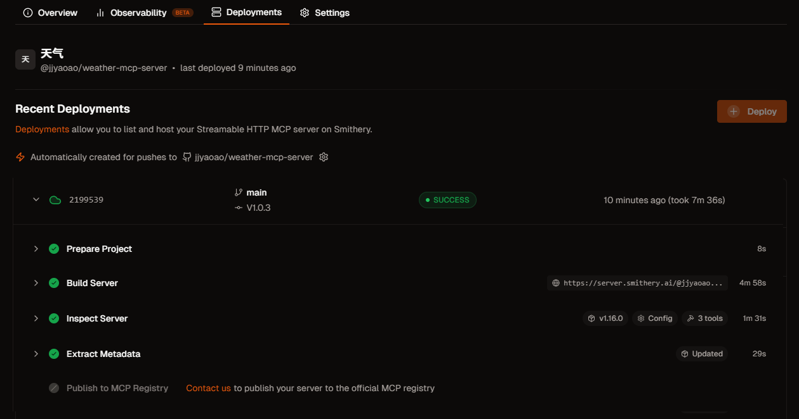
图 10.10 Smithery 发布成功页面
一旦服务器发布成功，用户可以通过以下方式使用：
方式 1：通过 Smithery CLI
方式 2：在 Claude Desktop 中配置
方式 3：在 HelloAgents 中使用
from hello_agents import SimpleAgent, HelloAgentsLLM
from hello_agents.tools.builtin.protocol_tools import MCPTool
agent = SimpleAgent(name="天气助手", llm=HelloAgentsLLM())
# 使用 Smithery 安装的服务器
weather_tool = MCPTool(
server_command=["smithery", "run", "weather-mcp-server"]
)
agent.add_tool(weather_tool)
response = agent.run("北京今天天气怎么样？")
当然，这里只是举例，还有更多的用法可以自行探索，下图 10.11 展示了当 MCP 工具发布成功会包含的信息，显示服务的名称“天气”，其唯一标识符 @jjyaoao/weather-mcp-server，以及状态信息。Tools 区域就是我们刚刚实现的方法，Connect 区则提供了连接和使用此服务所需的技术信息，包括服务的接入 URL 地址和多种语言/环境下的配置代码片段。如果想要更加深入了解可以点击这个链接。
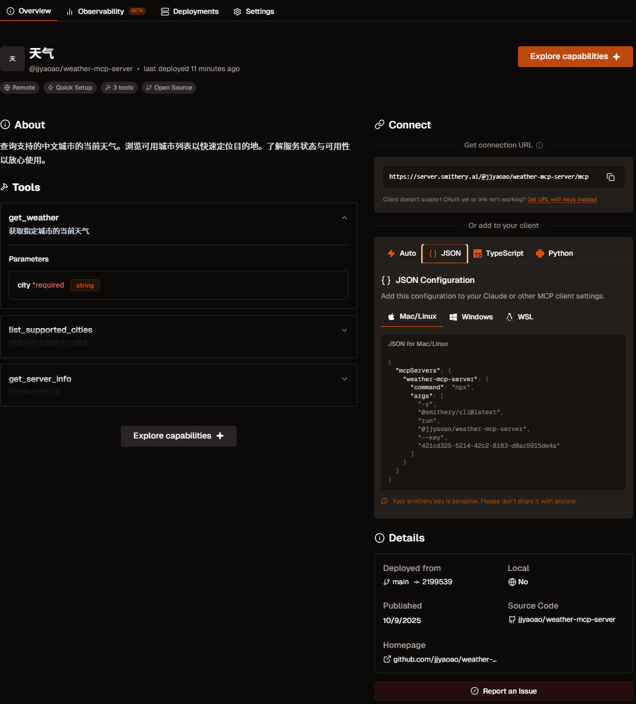
图 10.11 Smithery 发布成功的 MCP 工具
现在是时候去创造你的 MCP 服务器了！
10.6 本章总结¶
本章系统性地介绍了智能体通信的三种核心协议：MCP、A2A 与 ANP，并探讨了它们的设计理念、应用场景与实践方法。
协议定位：
- MCP (Model Context Protocol): 作为智能体与工具之间的桥梁，提供统一的工具访问接口，适用于增强单个智能体的能力。
- A2A (Agent-to-Agent Protocol): 作为智能体之间的对话系统，支持直接通信与任务协商，适用于小规模团队的紧密协作。
- ANP (Agent Network Protocol): 作为智能体的“互联网”，提供服务发现、路由与负载均衡机制，适用于构建大规模、开放的智能体网络。
HelloAgents 的集成方案
在HelloAgents框架中，这三种协议被统一抽象为工具（Tool），实现了无缝集成，允许开发者灵活地为智能体添加不同层级的通信能力：
# 统一的Tool接口
from hello_agents.tools import MCPTool, A2ATool, ANPTool
# 所有协议都可以作为Tool添加到Agent
agent.add_tool(MCPTool(...))
agent.add_tool(A2ATool(...))
agent.add_tool(ANPTool(...))
实战经验总结
- 优先利用成熟的社区 MCP 服务，以减少不必要的重复开发。
- 根据系统规模选择合适的协议：小规模协作场景推荐使用 A2A，大规模网络场景则应采用 ANP。
完成本章后，建议你：
- 动手实践：
- 构建自己的 MCP 服务器
- 利用协议创建多 Agent 协作系统
- MCP、A2A 与 ANP 的组合应用策略
- 深入学习：
- 阅读 MCP 官方文档：https://modelcontextprotocol.io
- 阅读 A2A 官方文档：https://a2a-protocol.org/latest/
- 阅读 ANP 官方文档：https://agent-network-protocol.com/guide/
- 参与社区：
- 向社区贡献新的 MCP 服务
- 分享个人开发的智能体实现案例
- 参与相关协议的技术标准讨论，也可以在 Issue 提问或是直接帮助 Helloagents 支持新的 example 案例
恭喜你完成第十章的学习！
你现在已经掌握了智能体通信协议的核心知识。继续加油！🚀
习题¶
提示：部分习题没有标准答案，重点在于培养学习者对智能体通信协议的综合理解和实践能力。
-
本章介绍了三种智能体通信协议：MCP、A2A 和 ANP。请分析：
-
在 10.1.2 节中对比了三种协议的设计理念。请深入分析：为什么 MCP 强调"上下文共享"，A2A 强调"对话式协作"，而 ANP 强调"网络拓扑"？这些设计理念分别解决了什么核心问题？
- 假设你要构建一个"智能客服系统"，需要以下功能：（1）访问客户数据库和订单系统；（2）多个专业客服智能体协作处理复杂问题；（3）支持大规模并发用户请求。请为每个功能选择最合适的协议，并说明理由。
-
三种协议是否可以组合使用？请设计一个实际应用场景，展示如何同时使用 MCP、A2A 和 ANP 来构建一个完整的智能体系统。画出系统架构图并说明各协议的职责。
-
MCP（Model Context Protocol）是智能体与工具通信的标准协议。基于 10.2 节的内容，请深入思考：
提示：这是一道动手实践题，建议实际操作
- 在 10.2.3 节的 MCP 服务器实现中，我们定义了
list_tools、call_tool等核心方法。请扩展这个实现，添加一个新的 MCP 服务器，提供以下工具：（1）数据库查询工具；（2）数据可视化工具；（3）报表生成工具。要求工具之间能够协作完成复杂的数据分析任务。 - MCP 协议支持"资源"（Resources）和"提示"（Prompts）两个重要概念，但本章主要聚焦于"工具"（Tools）。请查阅 MCP 官方文档，了解 Resources 和 Prompts 的设计目的，并设计一个应用场景，展示如何利用这三个核心概念构建更强大的智能体系统。
-
MCP 使用 JSON-RPC 2.0 作为底层通信协议，通过 stdio 进行进程间通信。请分析：这种设计有什么优势和局限性？如果需要支持远程 MCP 服务器（通过 HTTP/WebSocket 访问），应该如何扩展当前的实现？
-
A2A（Agent-to-Agent Protocol）支持智能体间的对话式协作。基于 10.3 节的内容，请完成以下扩展实践：
提示：这是一道动手实践题，建议实际操作
- 在 10.3.4 节的"研究团队"案例中，研究员和撰写员通过 A2A 协议协作完成论文写作。请扩展这个案例，添加第三个智能体"审稿人"（Reviewer），它能够评审论文质量并提出修改建议。设计三个智能体之间的协作流程，并实现完整的代码。
- A2A 协议定义了
task、task_result等消息类型。请分析：如果协作过程中出现冲突（如两个智能体对同一问题有不同意见），应该如何设计冲突解决机制？请扩展 A2A 协议，添加"协商"（negotiation）和"投票"（voting）等消息类型。 -
对比 A2A 协议与第六章介绍的 AutoGen、CAMEL 等多智能体框架：A2A 作为标准协议，与这些框架的关系是什么？它们能否互相替代？请设计一个方案，让基于 A2A 协议的智能体能够与 AutoGen 框架中的智能体进行通信。
-
ANP（Agent Network Protocol）支持大规模智能体网络。基于 10.4 节的内容，请深入分析：
-
在 10.4.2 节中介绍了 ANP 的网络拓扑设计，包括星型、网状、分层等结构。请分析：在什么场景下应该选择哪种拓扑结构？如果网络规模从 10 个智能体扩展到 1000 个智能体，拓扑结构应该如何演进？
- ANP 协议支持"路由"（routing）和"发现"（discovery）机制，让智能体能够动态找到合适的协作伙伴。请设计一个"智能路由算法"：根据任务类型、智能体能力、网络负载等因素，自动选择最优的消息路由路径。
-
在 10.4.4 节的"智能城市"案例中，多个智能体协作管理城市系统。请思考：如果某个关键智能体（如交通管理智能体）出现故障，整个系统应该如何应对？请设计一个"容错机制"，包括故障检测、备份切换、状态恢复等功能。
-
智能体通信协议的安全性和隐私保护是实际应用中的关键问题。请思考：
-
在 10.2.4 节的 MCP 客户端实现中，智能体可以调用 MCP 服务器提供的任何工具。请分析：这种设计存在什么安全风险？如果 MCP 服务器提供了危险操作（如删除文件、执行系统命令），应该如何设计权限控制机制？
- A2A 和 ANP 协议涉及多个智能体之间的通信，可能包含敏感信息（如用户隐私数据、商业机密）。请设计一个"端到端加密"方案：确保消息在传输过程中不被窃听或篡改，同时支持智能体身份认证和访问控制。
- 在大规模智能体网络中，恶意智能体可能会发送虚假信息、发起拒绝服务攻击或窃取其他智能体的数据。请设计一个"信任评估系统"：根据智能体的历史行为、协作质量、社区评价等因素，动态评估每个智能体的可信度，并据此调整通信策略。
参考文献¶
[1] Anthropic. (2024). Model Context Protocol. Retrieved October 7, 2025, from https://modelcontextprotocol.io/
[2] The A2A Project. (2025). A2A Protocol: An open protocol for agent-to-agent communication. Retrieved October 7, 2025, from https://a2a-protocol.org/
[3] Chang, G., Lin, E., Yuan, C., Cai, R., Chen, B., Xie, X., & Zhang, Y. (2025). Agent Network Protocol technical white paper. arXiv. https://doi.org/10.48550/arXiv.2508.00007